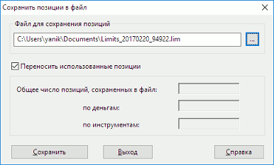

меню Брокер / Сохранить позиции в файл...
Функция выполняется через пункт контекстного меню «Сохранить все позиции в
файл» в одной из таблиц позиций или из меню программы Действия. В открывшемся окне
необходимо указать либо выбрать имя файла для записи. В диалоге также приведены
информационные поля с указанием количества строк, сохраненных в файле. Одной операцией сохранения в файл записываются позиции как по инструментам, так и
по денежным средствам.  Параметр CURRENT_LIMIT не используется. Параметр CURRENT_LIMIT используется, если Текущий лимит строго меньше
входящего. Нажатием кнопки «Сохранить» производится запись в файл. Нажатие кнопки
«Выход» приводит к закрытию окна. Файл представляет последовательность строк, каждая из которых содержит данные
по отдельной позиции, в виде «название параметра»=«значение», разделенные
символом «;» через пробел. Последовательность параметров и их значения приведены
в таблице.
Схемы переноса позиций
OPEN_BALANCE = Текущий остаток
OPEN_LIMIT = Текущий лимитOPEN_BALANCE = Текущий остаток
OPEN_LIMIT = Входящий лимит
CURRENT_LIMIT = Текущий лимит
Параметр
Соответствующее поле таблицы позиций
Параметр
Соответствующее поле таблицы позиций
Позиции по деньгам
Позиции по инструментам
MONEY:
Обозначение записи, относящейся к позиции по денежным средствам
DEPO:
Обозначение записи, относящейся к позиции по инструментам
FIRM_ID
Фирма
FIRM_ID
Фирма
TAG
Код позиции
SECCODE
Код инструмента
CURR_CODE
Код валюты расчетов
CLIENT_CODE
Код клиента
CLIENT_CODE
Код клиента
OPEN_BALANCE
Входящий остаток
OPEN_BALANCE
Входящий остаток
OPEN_LIMIT
Входящий лимит
* OPEN_LIMIT
Входящий лимит
* CURRENT_LIMIT
Текущий лимит
* CURRENT_LIMIT
Текущий лимит
TRDACCID
Счет депо
* LEVERAGE
** Плечо
WA_POSITION_PRICE
Цена приобретения
LIMIT_KIND
Срок расчётов
LIMIT_KIND
Срок расчётов
* - необязательный параметр.
** - параметр таблицы «Клиентский портфель».
MONEY: FIRM_ID = NC0080000000; TAG = EQTV; CURR_CODE = SUR; CLIENT_CODE = 583; OPEN_BALANCE =
200000,00; OPEN_LIMIT = 0,00; LEVERAGE = -1; LIMIT_KIND = 1;
DEPO: FIRM_ID = NC0080000000; SECCODE = RU0008926621; CLIENT_CODE = 583; OPEN_BALANCE = 300;
OPEN_LIMIT = 0; TRDACCID = NL0080000043; WA_POSITION PRICE = 41,17; LIMIT_KIND = 0;
Результат операции записи в файл отображается в Окне сообщений, например:
Файл D:\74.lim обработано строк – 210, позиций записано:
по денежным средствам – 83,
по инструментам – 127